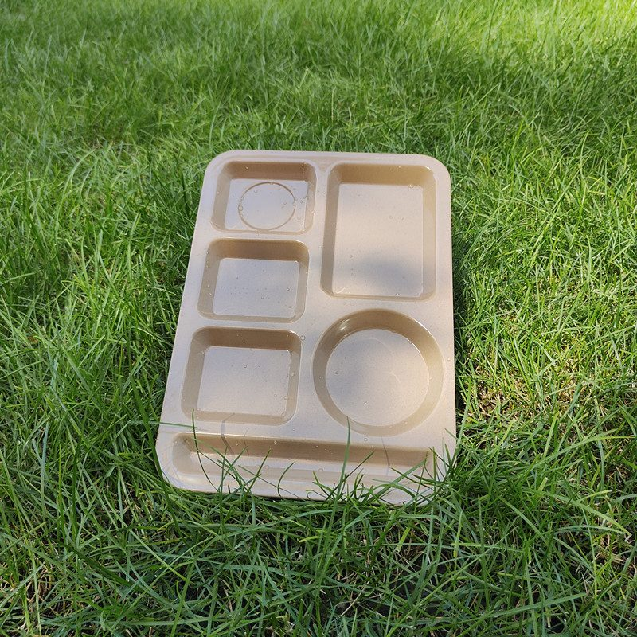
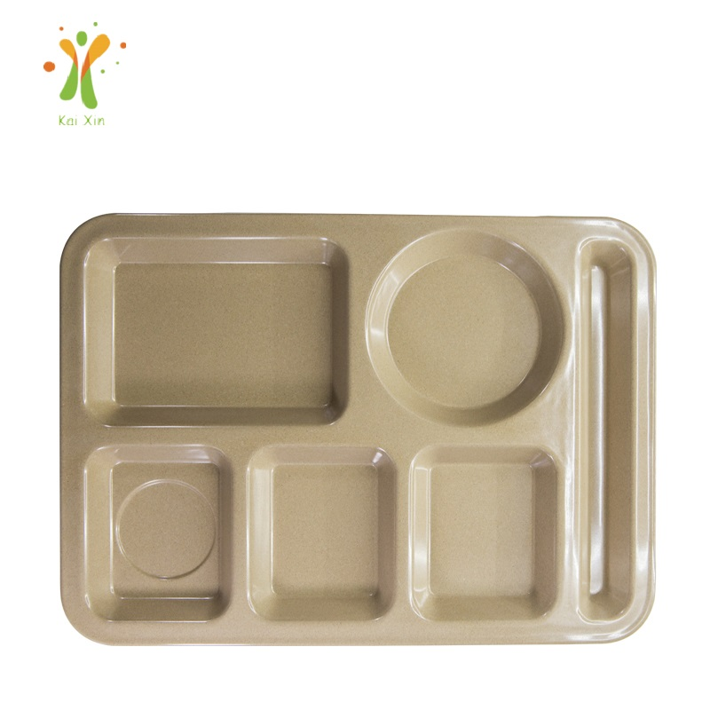

Reusable School Cafeteria Trays: A Sourcing Guide for K-12 Districts and Campus Dining
No foodservice segment buys tableware in duller, bigger numbers than institutional dining. In the United States, the National School Lunch Program alone served more than 4.8 billion lunches in fiscal year 2024 across nearly 100,000 schools; in Canada, the federal government committed $1 billion over five years starting in 2024 to expand school food programs in every province and territory. Every one of those meals travels on a tray that gets washed and used again the next day. This guide covers what a tray spec sheet should actually say, how the four common tray materials compare, and where the lifecycle math lands.

The compartment layout students and cafeteria managers both want: separated portions, one tray to clear, one tray to wash.
The Tray Is the Hardest-Working Item in the Building
A school tray does not live the gentle life of restaurant dinnerware. A typical K-12 cafeteria runs two to three meal services a day, roughly 180 days a year, and each service ends with hundreds of students stacking, sliding and occasionally dropping the same tray onto a bus cart — before it reaches the wash station. In most US and Canadian districts that wash station is an industrial dish machine, which is the single factor that decides whether plant fiber is the right material at all — we come back to that honestly in the washing section. University dining halls run the same abuse at even larger scale, with self-bussing built in: nobody clears the table for the student, so the tray is the cleanup system.
That usage profile explains why institutional buyers think differently from restaurant buyers: they are shopping for the item with the lowest total cost across thousands of cycles. Disposable trays solve the breakage problem but create a permanent consumable cost and a waste stream that grows with every meal served — which is why most programs that can run a dish machine standardize on reusables.
What Belongs in the Spec Sheet
School districts rarely buy trays off a shelf: in the US they procure through competitive bids and cooperative contracts, and in Canada purchasing flows through school boards and provincial programs. Someone writes a specification document either way, and its quality decides whether the winning bid holds up in service. The specs worth putting in writing:
Footprint and compartment layout. The tray has to fit the dish rack, the bus cart and the cafeteria table — in that order — and compartment layout should follow the actual menu.
Weight. Lighter trays are easier to carry and cheaper to freight, but too light reads as flimsy and tips when loaded; institutional buyers usually land between 350 and 500 grams for a full-size tray.
Stack height and nesting. Storage in a school kitchen is vertical; a tightly nesting tray can cut the footprint of a 500-tray program dramatically.
Edge and rim design. A raised, spill-proof rim keeps juice where it belongs and gives students something to grip; a rolled edge also survives bus-cart impacts better than a raw edge.
Food-contact documentation. Ask every bidder for the food-contact test report for the exact product quoted, not a generic family certificate. Ours are SGS tested for food contact, with reports part of every quotation — buyers should expect nothing less from anyone on the bid list.
For reference, here is how our current range maps to those requirements — real production specifications:
| Item | Size | Weight | Why it fits institutional service |
|---|---|---|---|
| 3-compartment plate | 355 × 260 × 24 mm | 390 g | Portion separation, non-slip honeycomb surface, spill-proof rim |
| Serving tray | 410 × 300 × 23 mm | 450 g | Full-size tray line, sturdy edges, easy to clean |
| Bowl (4 sizes) | 200–750 ml | 60–140 g | Soup, cereal and fruit service; break-resistant |
| Kids set (3-comp. plate) | 230 × 190 × 28 mm | 250 g | Early grades and daycare; sized for small hands |
Current production specifications — molded from natural rice husk fiber with a food-grade starch binder, custom colors available.

The 3-section compartment plate — the same logic as a cafeteria tray in a format that stacks flatter.
Choosing the Material: Four Options, Honestly Compared
Institutional buyers usually evaluate four materials. Standard plastic trays (polypropylene or polycarbonate) are the incumbent: cheap per unit and dishwasher-proven, but they stain, gray out over a few school years, and increasingly carry a perception problem with parents. Melamine is break-resistant and prints well, but has heat limitations worth confirming for hot-line service. Ceramic feels premium, but in a school environment it means chipped edges in the dish pit, higher wash-machine loading weight, and a replacement cycle that never stops. Molded plant fiber — rice husk composite — is the newer entrant: rigid enough to feel like real tableware, light enough to cut freight and lifting weight, and made from an agricultural byproduct rather than resin. We put the full numbers in our five-year cost model for rice husk, bamboo and ceramic; the short version is that purchase price is the smallest number in the institutional equation.
Washing, Stacking and the Lifecycle Math
The honest way to evaluate any reusable tray is cost per cycle. Take the unit price, divide it by the services it survives, then add the costs a spec sheet hides: freight weight, storage cube, breakage replacement and the labor of hauling disposables into a waste stream that never ends. Plant fiber trays score well on those hidden lines: they weigh roughly a quarter to a third of an equivalent ceramic piece, which matters in the dish room and in the container that brought them over — freight is priced by weight and cube, and a lighter tray means more units per container, as our container loading and MOQ guide explains. On washing, we would rather be blunt than win an order on a false assumption: this material is specified for hand washing and home dishwasher cycles. Industrial dish machines — tunnel, conveyor or rack units washing at 60 °C and above with high-alkaline detergent — are not recommended, because that heat and chemistry dull the surface and cut service life. That covers most K-12 dish kitchens in the US and Canada, so raise it at the inquiry stage: send us your machine type, wash temperature and detergent, and we will confirm the spec per SKU, or tell you plainly when a different material fits your dish room better.
Campus Dining: The Same Problem, Bigger Scale
University dining halls are the K-12 tray market's older sibling, with two differences. First, scale is larger and concentrated — a residential dining hall moves several thousand students through two dinner services, so tray weight, nesting and bus-cart geometry matter even more. Second, campuses are brand-conscious: dining directors want tableware that carries the school identity, and campus cafés want the same for cups. That is where customization earns its keep — molded or printed logos, colors matched to the school palette. Our rice husk coffee cups were designed for exactly that environment, and color customization runs across the whole range.
What Importers and Distributors Should Stock
For importers and broadline distributors, the institutional tray market rewards a narrow, deep assortment. The 3-compartment plate is the hero SKU — it serves schools, caterers and corporate cafeterias from the same stock, which keeps inventory turning. The full-size serving tray covers tray-line service, and mid-size bowls round out soup, cereal and fruit service. Timing matters too: districts and universities finalize fall-semester equipment decisions in late winter and spring, so orders placed January through March land in front of the buying window. And because caterers and corporate foodservice draw on the same SKUs, one container serves two demand curves — the overlap is larger than most people expect, as we noted in our guide to plastic-free catering from prep to plate.
Quick Checklist: Specifying Reusable Trays for Institutional Service
✅ Match tray footprint to your dish racks and bus carts before anything else
✅ Write weight, nesting depth and edge design into the bid spec — not just "food safe"
✅ Demand the food-contact test report for the exact SKU and color, not a family certificate
✅ Tell the supplier your wash setup — machine type, temperature, detergent — before quoting
✅ Model cost per service cycle over three years, including freight and breakage
✅ Order ahead of the late-winter procurement window, not after it
Frequently Asked Questions
Are reusable trays acceptable in school meal programs?
Nothing in the US National School Lunch Program or Canada's school food funding requires disposable serviceware; tray use is governed by local health-department rules on washing and sanitation. Most districts that operate a dish kitchen already run reusables. The buyer's job is to document that the material is food-contact tested and that the wash procedure meets local sanitation requirements — paperwork a serious supplier should provide.
Do rice husk trays survive an industrial dish machine?
Not the industrial ones, and we would rather say so here than have you find out in service. Our standard line is specified for hand washing and home dishwasher cycles; industrial machines wash at 60 °C and above with high-alkaline detergent, which dulls the surface and shortens service life. Schools with hand-wash or low-temperature setups use this material successfully, and we will give you the straight answer for your kitchen before you order.
Can we get a different compartment layout or our district's colors?
Yes. The 3-compartment plate and serving tray ship as standard; other layouts are possible with custom tooling at workable volumes, and custom colors, logos and packaging are available across the range. Districts usually start with stock colors in year one and move to custom colors once the program proves itself.
Districts can't import directly — how does the supply chain work?
Correct: schools and universities buy through distributors and contract holders, not from overseas factories. We supply the importers and foodservice distributors who hold those contracts, with wholesale MOQs built for container programs. If you're building an institutional line, tell us your market and target quantities and we'll structure the quote around your bid calendar.
Building an institutional tray program?
Tell us your market — K-12, campus dining or contract catering — and your target volumes. We'll send product samples, our SGS food-contact reports, custom color options and a quote built around your procurement calendar.
Send InquiryPublished by Kaixin Eco Team · Shenyang Kaixin Technology Co., Ltd. — eco-friendly rice husk (plant fiber) dinnerware manufacturer since 2016, shipping to 40+ countries with full OEM/ODM support. Going deeper: browse the full rice husk product range or start from the Kaixin eco tableware homepage.